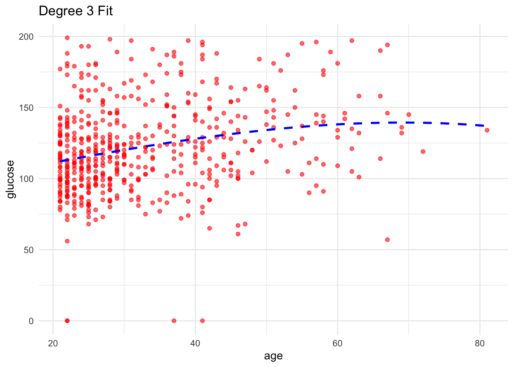
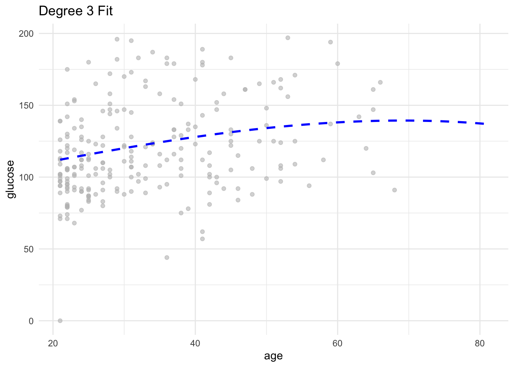

Evaluate performance in regression
pregnant glucose pressure triceps insulin mass pedigree age diabetes
1 6 148 72 35 0 33.6 0.627 50 pos
2 1 85 66 29 0 26.6 0.351 31 neg
3 8 183 64 0 0 23.3 0.672 32 pos
4 1 89 66 23 94 28.1 0.167 21 neg
5 0 137 40 35 168 43.1 2.288 33 pos
6 5 116 74 0 0 25.6 0.201 30 neg# Split into training and testing datasets
set.seed(123)
data_split <- initial_split(PimaIndiansDiabetes_Small, prop = 0.7)
train_data <- training(data_split)
test_data <- testing(data_split)Check dimensions of both! Want to split original dataset in a 70%, 30%
Now imagine we believe that the relationship between glucose and age is cubic. We can fit a polynomial like in class:
Call:
lm(formula = glucose ~ poly(age, 3), data = train_data)
Residuals:
Min 1Q Median 3Q Max
-128.659 -20.660 -3.134 18.239 85.960
Coefficients:
Estimate Std. Error t value Pr(>|t|)
(Intercept) 121.663 1.336 91.044 < 2e-16 ***
poly(age, 3)1 183.577 30.967 5.928 5.51e-09 ***
poly(age, 3)2 -35.517 30.967 -1.147 0.252
poly(age, 3)3 -5.328 30.967 -0.172 0.863
---
Signif. codes: 0 '***' 0.001 '**' 0.01 '*' 0.05 '.' 0.1 ' ' 1
Residual standard error: 30.97 on 533 degrees of freedom
Multiple R-squared: 0.06407, Adjusted R-squared: 0.05881
F-statistic: 12.16 on 3 and 533 DF, p-value: 1.039e-07Now, we want to understand if the model will be able to generalize to unseen data. In other words, we want to understand if we are overfitting or underfitting our data. To study this, we are going to evaluate the performance of our model in both our training (where the model is fit, and best fit parameters determined) and our testing data (not part of the fitting data at all!)
As this is a regression model, we can calculate our well-known metrics RMSE, MSE, SSR .. that measure the error between predicted y (glucose) and actual glucose value. We can do this by calculating the metrics ourselves, or using the many already determined functions.
But first, lets make our predictions:
training_glucose_prediction <- as.numeric(predict(model_cubic, train_data))
head(training_glucose_prediction) [1] 112.1167 127.2420 132.4825 112.1167 129.3420 115.7673To make it easier for us, lets include this predicted glucose in our training data as an extra column
age glucose diabetes mass pred_glucose
415 21 138 pos 34.6 112.1167
463 39 74 neg 35.3 127.2420
179 47 143 neg 45.0 132.4825
526 21 87 neg 21.8 112.1167
195 42 85 neg 24.4 129.3420
118 25 78 neg 33.7 115.7673Now lets do the same for the testing data
testing_glucose_prediction <- as.numeric(predict(model_cubic, test_data))
test_data <- cbind(test_data, pred_glucose = testing_glucose_prediction )
head(test_data) age glucose diabetes mass pred_glucose
1 50 148 pos 33.6 134.1276
3 32 183 pos 23.3 121.8059
4 21 89 neg 28.1 112.1167
9 53 197 pos 30.5 135.5756
15 51 166 pos 25.8 134.6329
17 31 118 pos 45.8 120.9758Onto evaluating our performance:
Train:
rmse_mine(train_data$glucose, train_data$pred_glucose )[1] 30.85099Test:
rmse_mine(test_data$glucose, test_data$pred_glucose )[1] 30.60295Can use already predefined functions (e.g Metrics package https://cran.r-project.org/web/packages/Metrics/Metrics.pdf)
Attaching package: 'Metrics'The following objects are masked from 'package:yardstick':
accuracy, mae, mape, mase, precision, recall, rmse, smape# Calculate individual metrics: train
Metrics::rmse(train_data$glucose, train_data$pred_glucose ) # the dots mean that I want this function rmse, to come from this package! In case other functions are named the same way[1] 30.85099Metrics::mae(train_data$glucose, train_data$pred_glucose )[1] 23.68902# Calculate individual metrics: test
Metrics::rmse(test_data$glucose, test_data$pred_glucose)[1] 30.60295Metrics::mae(test_data$glucose, test_data$pred_glucose )[1] 24.59446Do not worry about trying to replicate the plots!
# Visualise models
ggplot(train_data, aes(x = age, y = glucose)) +
geom_point(color = "red", alpha = 0.6) +
geom_line(data = data.frame(
age = seq(min(PimaIndiansDiabetes_Small$age), max(PimaIndiansDiabetes_Small$age), length.out = 100),
glucose = predict(model_cubic, newdata = data.frame(age = seq(min(PimaIndiansDiabetes_Small$age), max(PimaIndiansDiabetes_Small$age), length.out = 100)))
), aes(x = age, y = glucose), color = "blue", linetype = "dashed", size = 1) +
labs(title = "Degree 3 Fit") +
theme_minimal()Warning: Using `size` aesthetic for lines was deprecated in ggplot2 3.4.0.
ℹ Please use `linewidth` instead.
# Visualise models
ggplot(test_data, aes(x = age, y = glucose)) +
geom_point(color = "grey", alpha = 0.6) +
geom_line(data = data.frame(
age = seq(min(PimaIndiansDiabetes_Small$age), max(PimaIndiansDiabetes_Small$age), length.out = 100),
glucose = predict(model_cubic, newdata = data.frame(age = seq(min(PimaIndiansDiabetes_Small$age), max(PimaIndiansDiabetes_Small$age), length.out = 100)))
), aes(x = age, y = glucose), color = "blue", linetype = "dashed", size = 1) +
labs(title = "Degree 3 Fit") +
theme_minimal()
They both fit the data in quite a similar way ! Overfitting, not happening as similar performance in both train and test, but probably this is not the best model, underfitting as missing lots of insight and error is high. What can be the reason behind this? My go to, is that we should increase number of features, as trying to predict glucose with age is too simple and cannot capture the complexity of glucose behaviour.
Key things to understand: - Dataset splitting - Fitting model in training - Evaluating performance of fitted model in both train and test to understand possible overfitting, underfitting issues - Extract insight from modeling and decide next steps